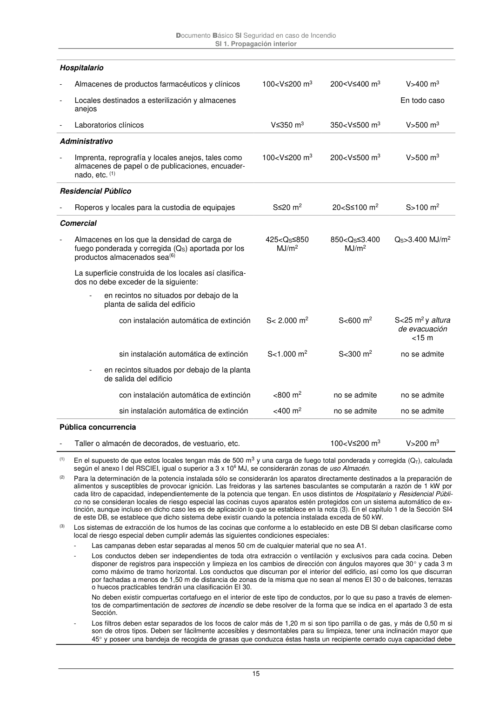

DB-SI · Residencial Público · versión 2025-03-04 · capa oficial
Formatos: JSON compacto · Markdown · PDF fuente
Ámbito del documento · texto del ámbito · documento y tablas
ID técnico a0036 · PDF pág. 15 · jerarquía no validada por persona · contrastado con el literal de la página 15 (candidato tipográfico); no validado por persona · padre: a0033
Residencial Público - Roperos y locales para la custodia de equipajes S≤20 m2 20<S≤100 m2 S>100 m2

PDF fuente redistribuible: copia fiel enlazada en esta página (SHA256 verificado).